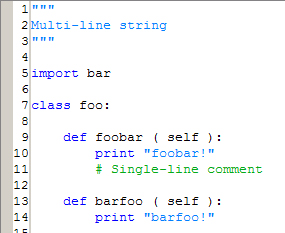

<!--===============================================================================================

	File:		editor_syntaxh.html

	Author:		Parhaum Toofanian, Copyright 2004
	Contact:	ptoofani@andrew.cmu.edu
	Created:	2004-06-14
	Modified:	2004-06-14

	Part of PyDev User Guide in Eclipse.  Describes information about Syntax Highlighting
	in the plug-in, along with screenshots and helpful information on hotkeys.

================================================================================================-->


<!doctype html public "-//w3c//dtd html 4.0 transitional//en">
<html>

	<head>
		<script src = "includes/script.js" language="javascript" type="text/javascript"></script>
		<link rel = stylesheet href = "includes/style.css" type = "text/css">
		<meta http-equiv="Content-Type" content="text/html; charset=iso-8859-1">
		<title>PyDev User Guide</title>
	</head>

	<body class = BlueGray>

		<script language="javascript">
			var heads 	= new Array ( );
			var links 	= new Array ( );
			var i 		= 0;

			heads[i] 	= 'PyDev User Guide';
			links[i++] 	= 'index.html';

			heads[i] 	= 'Editor';
			links[i++] 	= 'editor.html';

			heads[i] 	= 'Syntax Highlighting';
			links[i++] 	= 'editor_syntaxh.html';

			writeHeading ( heads, links );
		</script>

		<!-- Description -->
		<script language="javascript">
			var headline = 	'Description';
			var desc	= 	'The PyDev editor supports user-customized Syntax Highlighting, which ' +
							'colorizes keywords, comments, and strings according to adjustable colors ' +
							'in the <a href="preferences.html">Preferences</a> page.<br><br>' +
							'';

			writeGeneric ( headline, desc );
		</script>

		<!-- Invocation -->
		<script language="javascript">
			var rows = new Array ( );
			var hotkeys = new Array ( );

			var desc	= '';

			writeInvocation ( rows, hotkeys, desc );
		</script>

		<!-- Process -->
		<script language="javascript">
			var headline = 	'Process';
			var desc = 		'';

			writeGeneric ( headline, desc );
		</script>

		<!-- Selection -->
		<script language="javascript">
			var headline = 	'Selection';
			var desc = 		'';

			writeGeneric ( headline, desc );
		</script>

	</body>

</html>